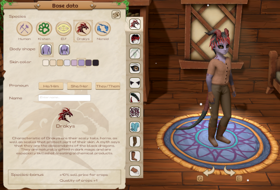

15. April 2023 - Character Customizer
Hallo zusammen!
Hoffentlich hattet ihr eine schöne Osterzeit und genießt den Frühling! Hier taut der Schnee endlich und so langsam ist das Gras im Garten zu sehen.
Charakter Creator
Nun, in den letzten zwei Wochen lag der Fokus erneut auf dem Charakter-Creator. Nach anbinden und einfügen neuer Animationen habe ich erst einmal die ganze Start-Kleidung erstellt. Jede Spezies hat 2 Spezies-typische Kleidungsstücke zur Auswahl. Es ist dennoch möglich die Kleidung der anderen Spezies auszuwählen, es gibt dafür keine Restriktionen. Aktuell sind also 10 Kleidungsstücke zur Auswahl.
Ein paar weitere Assets wurden noch hinzugefügt und guten Gewissens kann ich sagen, dass der Charakter Creator für’s erste nun abgeschlossen ist (abgesehen von weiteren Assets).
Item Creator
Vor einem Jahr habe ich ein Tool entworfen, um die Items recht einfach in der Spiele-Engine zu erstellen. Dieses Tool ist mit der steigenden Menge der Items jedoch recht langsam geworden.
Ändern wollte ich es jedoch nicht, da quasi das ganze Spiel und damit eine ganze Menge Code darauf basiert.
Nun habe ich den Creator doch komplett neu erstellt. Mehr Informationen dazu könnt ihr ausführlich auf Patreon lesen:
https://www.patreon.com/posts/new-itemcreator-81493760
Der neue Creator ist viel schneller und der Code jetzt auch klarer für die Handhabung der Items. Das Vereinfacht es in der Zukunft enorm. Auch kann ich mit einem Klick jetzt hunderte von Items in Theorie erstellen (natürlich mit etwas Vorarbeit).
Ausblick
Farmbäume, Environment & NPCs
Der Fokus in den nächsten 2 Wochen liegt unter anderem auf den Farm-bäumen. Damit habe ich bereits begonnen, um die Bäume an unseren neuen Baum-stil anzupassen.
Generell wird das Environment nun etwas mehr im Fokus sein, um mehr visuelle Aspekte fertig zu bekommen. Marie sitzt aktuell an einem Konzept, um die Veränderung der Welt zu zeigen, wenn die Magie nach und nach zurückkehrt.
NPCs
Zwischen dem Environment werden die bisherigen NPC-modelle angepasst und mit Basis-Animationen versehen. Außerdem soll es Ende des Monats möglich sein, mit ihnen besser interagieren zu können als bisher.
Kickstarter
Ein Plan für die Kickstarter-Kampagne festigt sich nun. Geplant ist der Zeitraum Oktober-November. Um den Prozess der Entwicklung etwas zu beschleunigen, ist Geld durchaus von Nöten. Ein oder zwei Artists für die ganzen Assets als Unterstützung und eine Person, die das Schreiben der Geschichte übernimmt wären durchaus wünschenswert. Ansonsten schiebt sich der Release weiter in die Zukunft.
Wenn ihr uns unabhängig davon Unterstützen wollt, schaut doch mal auf unserer Patreon-Seite vorbei.
https://www.patreon.com/moonflamegames
Liebe Grüße,
Euer Magical Harvest Team
Isa & Marie
31. März 2023 - Character Customizer
Hallo zusammen!
Das war ein anstrengender Monat. Ich hoffe, ihr hattet es da etwas einfacher…
Das Umziehen war etwas stressiger als erwartet und dadurch konnte ich eine Woche nicht an Magical Harvest arbeiten. Unser neuer Wohnort ist dafür sehr idyllisch, am Rand eines kleinen Dorfes direkt am Wald. Eichhörnchen und ein Reh haben uns schon begrüßt :-). Der Schnee im Garten ist hier nach wie vor über einen halben Meter hoch. Mal sehen, wann es hier Frühling wird…
Aber nun zu Magical Harvest.
Ich habe Mitte März keine News verfasst. Daher fasse ich nun den gesamten Monat in einer Rubrik zusammen:
Character Customizer
Nachdem ich recht zu beginn des Monats einen einfachen Customizer erstellt habe, habe ich das ganze noch mal komplett überarbeitet. Ursprünglich versuchte ich alle Optionen auf ein UI-Panel zu bekommen, aber der Platz war zu wenig, um den Charakter wirklich gut gestalten zu können. Spätestens mit den Spezies, bei denen man Schwänze, Ohren etc. erstellen kann, war die Lösung nicht optimal.
Nachdem ich das System also umgestellt habe, war es ein Leichtes, neue Optionen hinzuzufügen. Natürlich steckt immer noch Aufwand dahinter, aber es besteht einfach kein Platzmangel mehr und der Support für andere Bildschirmgrößen ist daher auch gesichert.
Parallel dazu habe ich eine gute Arbeitsweise für die Erstellung der Haare gefunden und mich generell mehr mit dem Basismodel befasst, um es langsam in die gewünschte Richtung zu bringen. Die Kleidung und einige Optionen sind aktuell nach wie vor nicht final. Die Kleidung macht bei Animationen noch ein klein wenig Probleme und daher erstelle ich noch keine komplexen Assets. Mein Wunsch ist, jemanden dafür anzuheuern, der qualitativ bessere Modelle erstellen kann. Aber dazu brauche ich erst Funding (Kickstarter ist für ende des Jahres geplant).

Zum Customizer selbst:
Man kann zwischen den 5 verschiedenen Spezies wählen. Abgesehen von der Hautfarbe, aus denen ihr aus vorgegebenen Optionen wählen könnt, könnt ihr euren Character nach euren farblichen Wünschen gestalten. Die Kleidungsfarben sind ebenfalls vorgegeben, da Kleidung im Laufe des Spiels hergestellt werden kann.
Zusätzlich zu den Basisoptionen (Haare, Bart, Augen, Oberteil, Hose, Schuhe und Handschuhe) haben manche der Spezies zusätzliche Customizing-optionen:
- Ki‘shen: (Tier)ohren & Schwanz
- Elfen: Tiara
- Drakys: Schuppen, Hörner & Schwanz
- Nereiden: Kopffinne, Streifen & Schuppen

Spezies-Bonus
Die Spezies bringen jeweils einen Bonus mit, der sich auf das Spiel auswirkt. Aktuell ist der Gedanke, dass ihr beim Verkaufen 10% mehr Gold von einer bestimmten Kategorie erhaltet (Menschen bekommen z.B. 10% mehr beim Verkauf von Farmprodukten). Ob die aktuell eingefügten Boni so bleiben, werden wir im Verlauf der Entwicklung sehen.
Ausblick
Der nächste Schritt ist die Anbindung des Customizers an das Hauptspiel und speichern und laden des richtigen Models. Dann benötige ich neue Animationen.
Der Fokus liegt also weiterhin auf dem Charakter und auch auf den NPCs, damit diese ebenfalls zum Leben erwachen.
Ich hoffe, dass ich mit allen Updates euren Erwartungen gerecht werde. Wahrscheinlich geht es euch nicht schnell genug voran, aber leider ist dies hier nun mal ein sehr großes Projekt. Ich arbeite auf die Kickstarter Kampagne hin, um Leute anheuern zu können, damit das Ganze etwas schneller voran geht. Nur muss ich dafür erst einmal etwas vorzeigen können.
Danke für’s Lesen und bis zum nächsten Mal!
Liebe Grüße,
Euer Magical Harvest Team
Isa & Marie
1. März 2023 - NPC-Models & Character Creator
 Hallo zusammen!
Hallo zusammen!
In den letzten zwei Wochen saß ich nur am Character-Creator. Dies bezog sich erst einmal nur auf eine Art Creator für die 3D-Software (Blender), die ich zum Modellieren der Assets nutze. Dieser Creator dient dazu, verschiedene Körpermaße (muskulöser, dicker, dünner etc) für die NPCs zu erstellen. Davor habe ich unser Basismodel noch verbessert.
NPCs
Ziemlich motiviert durch das Funktionieren dieses externen Creators habe ich einfach direkt 3 unserer Heiratskandidaten erstellt. Lyris, Thalana und Zarek haben damit ihr Model (die Augen müssen noch angepasst werden).
Vor allem Lyris mit den ganzen Mustern war viel Arbeit, die man dann im Spiel außerhalb von Cutscenes sowieso nicht wirklich sieht… Mit dem Ergebnis der 3 bin ich jedenfalls zufrieden.
Bei unseren Charakteren im Spiel achten wir darauf, dass sie nicht zu jung aussehen. Jedenfalls versuchen wir es.

Animationen
Ich konnte auch ein System implementieren, um manch vorgefertigte Animationen zu nutzen und zusätzlich eigene Animationen zu erstellen. Dies ist etwas komplexer, da ich zuvor nur entweder die vorgefertigten Animationen nutzen konnte oder eigene. Eine Mischung hilft da enorm, den Arbeitsfluss zu beschleunigen.
Animationen sind nicht so einfach, vor allem wenn sie gut aussehen sollen.
Character Creator
Die letzten 2 Tage habe ich am Character-Creator für die Spieler gesessen. Das gezeigte Bild ist ein Work-in-progress-zustand mit ein paar Test-Assets, die ich erstellt habe und definitiv nicht final. Es ist ein erster Schritt zum Aufbau des Anpassungssystems.
Wie ihr sehen könnt, wird es zweifarbige Haare geben, die ihr nach eurem Belieben einfärben könnt. Ebenso wie die Augenfarbe.
Die Hautfarbe wird aus vorgegebenen Optionen wählbar sein, da wir hier verschiedene Spezies haben und diese haben nun mal ihr eigenes Farbschema.

Es ist möglich, zwischen Körperformen (männlicher und weiblicher Körperbau) zu wählen. Kleidung kann bei beiden Varianten getragen werden. Pronomen werden ebenfalls frei wählbar sein und in der englischen Version wird Them/They ebenfalls unterstützt werden.
An sich waren wir noch am überlegen, eine Art Gesichtsdekoration einzubinden. Allerdings ist der Character im Spiel recht klein und dies wird recht wenig von Bedeutung sein. Würdet ihr euch noch etwas in diese Richtung wünschen? Wie Muster, Narben?
Bart fehlt auf jeden Fall noch. Ich habe erst mit dem Creator begonnen, also Geduld!

Ausblick
In den nächsten zwei Wochen wird der Character-Creator plus dafür nötige Assets im Vordergrund stehen.
Weiter nichts, da wir bald auch umziehen und noch einiges dafür tun müssen – neben Dinge für unsere Hochzeit planen und machen.
Ich versuche, am 15. März News zu veröffentlichen, kann es aber nicht garantieren.
Liebe Grüße,
Euer Magical Harvest Team
Isa & Marie
15. Februar 2023 - NPC-Verhalten & Stadt
 Hallo zusammen!
Hallo zusammen!
Die letzten 2 Wochen vergingen echt schnell… Und irgendwie habe ich eine Menge gemacht und doch nicht viel (gefühlt).
Global Game Jam
Zum einen habe ich am Global Game Jam teilgenommen und eine kleine Puzzle-Collection entworfen, die auf Bilder basiert. Das Spiel soll als Basis dienen, um es zu erweitern und einfache, potenzielle Minispiele für Magical Harvest auszutesten. https://isavii.itch.io/roots
Stadt
Der erste Teil des Stadtviertels des Shaylin-Ordens wurde erstellt. Das beinhaltet 4 Häuser, das allgemeine Straßenlayout, Texturen und erste Dekorationen, um ein Gefühl für das Stadtaussehen zu entwickeln.
Außerdem wurden Lichter bereits an Tag und Nachtverhältnisse angepasst und ein System implementiert, um zukünftig leicht Texturen anzupassen, die sich während des Spielverlaufs verändern. Innenräume wurden noch nicht erstellt.
Die aktuellen Bilder zeigen noch nicht das finale Stadtaussehen, aber die Richtung. Wir brauchen noch viel mehr Assets…
NPCs
Ich habe effektiv mit der NPC-Logik begonnen. Das heißt, ich habe ein Tool erstellt, mit dem wir die Laufrouten und Aktionen von NPCs kreieren können. Dies ist nicht allzu einfach und ist noch immer in Bearbeitung, aber bis jetzt können wir zumindest einen Tagesablauf für NPCs erstellen.

Das Ganze wird am Ende eine Menge Arbeit sein, da viele Sonderfälle berücksichtigt werden müssen.
Macht der NPC am Dienstag andere Dinge als montags? Macht er mittwochs etwas anderes, wenn er 4 Herzen hat, als wenn er 7 oder keine Herzen hat? Was macht er, wenn er mit dem Spieler verheiratet ist? Oder macht er bei Regen etwas anderes als bei Sonnenschein?
Ihr seht, das kann ganz schön komplex werden.
Das Erstellen des Tools hat so viel Zeit gekostet, dass ich keine weiteren Tiere animiert habe. Aber ich denke, dies werde ich auch erst einmal zurückstellen und weiter an den fehlenden Kerninhalten des Spiels arbeiten.
 Ausblick
Ausblick
Da die Arbeit an den NPCs mit den wenigen Models nicht schön ist, bin ich am Überlegen, den Character-Creator zu machen. Dabei sind 5 Spezies zu berücksichtigen, manche mit Schwanz, verschiedene Größen und Körperformen. Könnte spannend werden!
Am letzten Wochenende sind wir auch 10h weiter nach Norden in die Mitte von Schweden gefahren, um unseren Mietvertrag zu unterschreiben. Mitte März ziehen wir um. Die Arbeit wird dann für circa eine Woche ruhen, bis wir uns dort eingelebt haben. Wir sind keine Stadtmenschen, aber der Ort mit 130 Einwohnern wird schon sehr gewöhnungsbedürftig werden.
Liebe Grüße,
Euer Magical Harvest Team
Isa & Marie
1. Februar 2023 - Tiere, Stadt und Tageszeiten
 Hallo zusammen!
Hallo zusammen!
Wir hoffen, es geht euch gut und ihr genießt die Zeit!
Als große Harry Potter-Fans freuen wir uns hier schon sehr auf Hogwarts Legacy - ihr auch? Schließlich geht es dort auch magisch zu!
Da wir mehr spielen, konzentrieren wir uns jetzt mehr auf Magical Harvest und in den letzten 2 Wochen ist einiges dazugekommen.
Tiere
Wie ihr wisst, saß/arbeite ich (Isa) an den Animationen der Tiere. Das ist ziemlich langwierig und auch nicht besonders aufregend, weshalb ich ab und zu zu anderen Bereichen gewechselt bin. Für die ersten Tiere haben wir jetzt Animationen, die auch schon im Spiel integriert sind.

Das „Zuchtminispiel“ ist auch schon in den Grundzügen implementiert, muss aber noch aufgehübscht werden, wofür noch mehr Art-Assets benötigt werden, die für diesen Bereich erst einmal zurückgestellt wurden. Wir bräuchten wirklich noch jemanden, der uns mit den Assets hilft... Das würde den Prozess sehr beschleunigen.
Es ist jetzt möglich, mit den Tieren zu interagieren, sie aus dem Stall zu holen und sie wieder in den Stall zu bringen, und sie produzieren Produkte.
Tag-Nacht-Zyklus
Bisher hatten wir einen Tag-Nacht-Zyklus, bei dem sich die Sonne über den Himmel bewegte. Leider hatte das ein Flackern der Schatten zur Folge, was ziemlich nervig aussah, und generell mochte ich den Effekt nicht besonders. Jetzt haben wir jeweils um 9 Uhr, um 17 Uhr und um 21 Uhr Übergänge zwischen den Tageszeiten. Zu diesen Zeiten wechselt die Tageszeit von Morgen zu Mittag, Mittag zu Abend und Abend zu Nacht. Das ist ein viel besserer Hinweis darauf, wann die Tageszeit wechselt (was z.B. beim Angeln wichtig ist), und es sieht auch viel besser aus!

Die Stadt Drachenring
Die Stadt wird ziemlich viele Assets benötigen. Da ich ungerne mit lieblosen Würfeln zum Testen arbeite, habe ich damit begonnen, die Stadt zu kreieren (zur Abwechslung zu den Animationen). Marie hat den groben Aufbau der Stadt konzipiert, damit wir sehen wo welche Gebäude stehen und darauf aufbauend, kreiere ich nun das begehbare Layout.
Die Stadt selbst ist in 3 Bezirke mit eigenem Häuserstil unterteilt. Außerdem ist der Plan, Pflanzen teilweise ebenfalls an die Bezirke anzupassen. Mit steigender Magie in der Welt, sollen diese Pflanzen auch magischer aussehen. Also werden hier eine Menge Assets benötigt…
Ich habe ein System zum Erstellen der Straßen entworfen und ein Teil zum Testen bereits umgesetzt. Das folgende Bild ist eine Testszene eines Teils der Stadt und definitiv nicht final.
Wir wollen jedoch den grünen Aspekt in der Stadt behalten und nicht alles zupflastern!
Charakter-Konzepte
Die Illustration-roh-konzepte für Lyris (Bachelorette, Mensch) und Ky’rah (Bachelorette, Ki’shen) sind fertig. Lura half uns bei diesen, und macht nach wie vor einen super Job! Danke, Lura!
Ausblick
In den nächsten zwei Wochen werden nach wie vor Tier-Animationen und die Stadt im Vordergrund stehen, sowie allgemeine Verbesserungen hier und da zu meiner eigenen Abwechslung.
Klingt also nicht so spannend, aber mal abwarten, was noch so dazu kommt!
Dieses Wochenende ist auch Global Game Jam. Ich werde daran teilnehmen und ein oder zwei kleine Puzzle-spiele programmieren, die eventuell in Magical Harvest als kleines Minispiel dienen können. Mal sehen! Auch davon werde ich berichten!
Hoffentlich lenkt uns Hogwarts Legacy nicht zu sehr ab. Werdet Ihr es auch spielen?
Liebe Grüße,
Euer Magical Harvest Team
Isa & Marie
15. Januar 2023 - Homepage update
 Forhes neues Jahr!
Forhes neues Jahr!
Unsere ersten News in 2023! Mein Jahr startete mit meinem Familien-Besuch in Deutschland, den ich im November wegen Corona verschieben musste. Daher blieb die Arbeit am Spiel selbst etwas liegen. Aber natürlich ruhe ich selbst auf der Reise nicht. Die Zeit nutzte ich, um u.a. die Homepage zu aktualisieren.
Homepage-Update: Bachelor/ettes-Beschreibungen
Die Homepage wurde überarbeitet. Ihr findet jetzt unter der Rubrik “Cast” alle fest geplanten Bachelors und Bachelorettes und ihre Beschreibungen. Illustrationen werden nach und nach von unserer lieben Lura fertiggestellt.
Wir hoffen, ihr findet die Wahl unserer Bachelor/ettes interessant und dass für jeden etwas dabei ist. Wir haben versucht, in Farmspielen nicht so häufig vorkommende Persönlichkeiten zu erstellen und auch welche, die uns natürlich selbst gefallen. Eine wirkliche Vorstellung werdet Ihr natürlich erst haben, wenn die ganzen Illustrationen fertig sind.
Außerdem existiert jetzt ein Presskit, welches das MH-Projekt zusammenfasst, um damit zukünftig an potentielle Investoren herantreten zu können (wir haben nach wie vor quasi keine finanzielle Unterstützung. Danke hierbei an unsere beiden Patreons, die uns unterstützen!).
Tiere und Kreuz-Züchtung
In Magical Harvest ist es möglich, Tiere magisch zu kreuzen. Das dazugehörige Minispiel ist in seiner Basis nun implementiert. Tiere sind im Moment weiterhin der zentrale Entwicklungspunkt. Das Erstellen der 3D-Modelle, die Texturen, Icons und Animationen kostet sehr viel Zeit, aber es geht voran!
 Architektur
Architektur
Marie sitzt zur Zeit am Design der Gebäude für alle 3 Fraktionen. Ich habe bereits begonnen, aus den bisherigen Konzepten die ersten Gebäude-Modelle zu erstellen.
Vermutlich werden wir nach dem Baukastenprinzip vorgehen und Wände, Fenster und Dächer unabhängig erstellen, um die Häuser dann nach unseren Belieben zusammenzusetzen.
Ausblick
Die Tiere werden weiterhin zentrales Thema sein. Ich möchte diesen Bereich des Spiels erst abschließen, bevor ich den nächsten großen Programmierungs-Part angehe (NPCs).
Dazwischen werde ich jedoch die ersten Assets für unsere Stadt erstellen. Darauf freue ich mich wirklich sehr!
Marie wird weiterhin an dem Konzept der Stadt arbeiten.
Liebe Grüße,
Euer Magical Harvest-Team
Isa & Marie